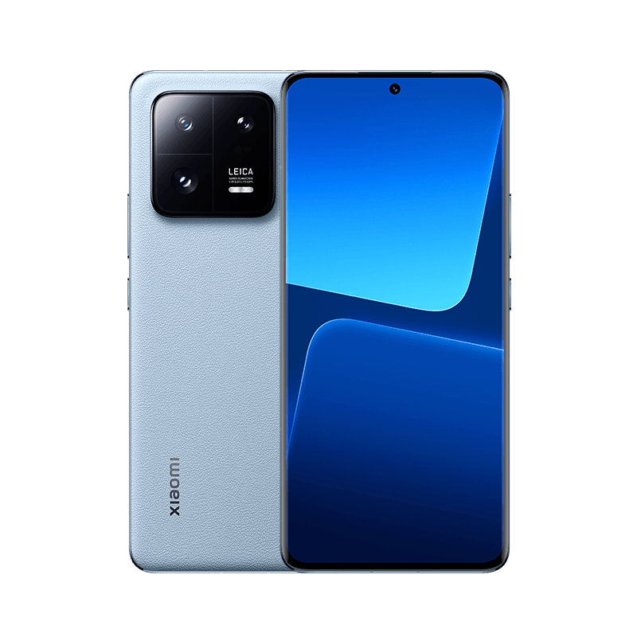

hello Xiaomi haqida songi malumotlar
1-bolim 2-bolim 3-bolim
1-bolim
Yuqori sahifaga chiqish Xiaomi — Xiaomi Inc. firmasi tomonidan ishlab chiqarilgan toʻrtdiapazonli GSM-telefon, oʻz ichiga quyidagi funksiyalarni mujassamlashtiradi: iPod, kamerafon va internet-planshet. Mac OS X operatsion sistemasi platformasida ishlaydi.
redmi note 12 prohaqida malumotlar
2-bolim
Yuqori sahifaga chiqish Redmi— Redmi Inc. firmasi tomonidan ishlab chiqarilgan toʻrtdiapazonli GSM-telefon, oʻz ichiga quyidagi funksiyalarni mujassamlashtiradi: iPod, kamerafon va internet-planshet. Mac OS X operatsion sistemasi platformasida ishlaydi.
Redmi note 13 pro haqida malumotlar

3-bolim
Yuqori sahifaga chiqish Redmi — redmi Inc. firmasi tomonidan ishlab chiqarilgan toʻrtdiapazonli GSM-telefon, oʻz ichiga quyidagi funksiyalarni mujassamlashtiradi: iPod, kamerafon va internet-planshet. Mac OS X operatsion sistemasi platformasida ishlaydi.
Xiaomi haqida malumotlar
bosh sahifaga qaytish